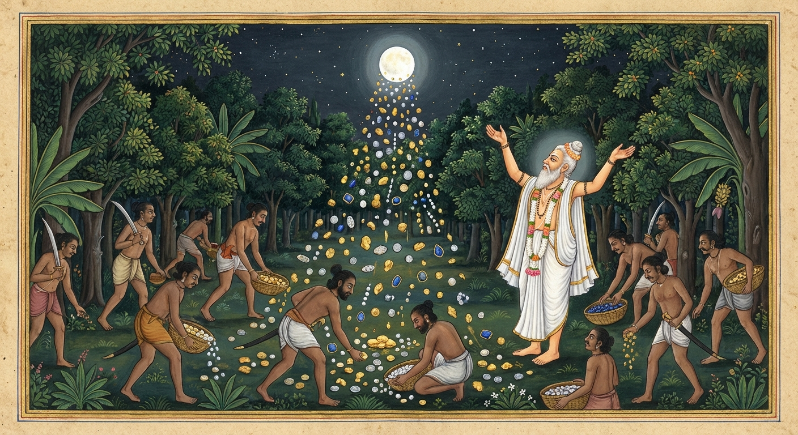

8. වේදබ්භ ජාතකය (48)
“අනුපායෙන යො අත්ථං...” යන මේ ජාතක කථාව බුදුරජාණන් වහන්සේ ජේතවනාරාමයේ වැඩ වසන සමයෙහි එක් අකීකරු භික්ෂුවක් අරබයා දේශනා කරන ලදී. බුදුරජාණන් වහන්සේ ඒ භික්ෂුව අමතා, “මහණ, ඔබ අකීකරු වූයේ දැන් පමණක් නොවේ. පෙරත් ඔබ අකීකරු ව සිටියෙහිය. ඒ හේතුවෙන් නුවණැත්තන්ගේ වචනය නොපිළිගෙන, තියුණු කඩුවකින් දෙපලු වී කපා දමනු ලැබ මහමඟ වැටුණෙහිය. ඔබ එක් අයෙකු නිසා පුරුෂයන් දහසක් මරණයට පත් විය” යැයි වදාරා අතීත කථාව ගෙනහැර දැක්වූ සේක.
පෙර බරණැස් නුවර බ්රහ්මදත්ත රජු රාජ්ය කරන සමයෙහි එක් කුඩා ගමක ‘වේදබ්භ’ නම් මන්ත්රයක් දත් එක්තරා බමුණෙක්
විසීය. ඒ මන්ත්රය ඉතා අගනේ ය; මහා වටිනාකමක් ඇත්තේ ය. යම් නැකැත් යෝගයක් උදා වූ කල්හි ඒ මන්ත්රය ජප කොට අහස
දෙස බැලූ විට අහසින් සත් රුවන් වැසි වසී. එකල බෝසතාණන් වහන්සේ මෙම බමුණා ළඟ ශිල්ප හදාරමින් සිටියහ.
එක් දිනක්
බමුණා බෝසතුන් ද සමඟ කිසියම් කාර්යයක් සඳහා තම ගමින් පිටත් ව චේතිය රටට ගියේය. අතරමග වනගත ප්රදේශයක දී
පන්සියයක් පමණ වූ ‘පේසනක සොරු’ (පණිවිඩ යවා වස්තුව ගෙන්වන සොරු) මං පහරමින් සිටියහ. ඔවුහු බෝසතුන් සහ වේදබ්භ
බමුණා අල්ලා ගත්හ. මොවුන්ට ‘පේසනක සොරු’ යයි කියනු ලබන්නේ මන්ද? ඒ සොරුන් දෙදෙනෙකු අල්ලා ගත් විට ධනය ගෙන්වා
ගැනීම සඳහා එක් අයෙකු යවන බැවිනි. ඔවුන්ගේ ක්රමය මෙසේය:
- පිය පුතු දෙදෙනෙකු ගත් විට, පුතා රඳවාගෙන ‘අපට ධනය ගෙනැවිත් දී පුතා රැගෙන යව’ යි පියා පිටත් කර යවති.
- මව සහ දියණිය ගත් විට, දියණිය රඳවාගෙන මව පිටත් කර යවති.
- වැඩිමහල් සහ බාල සොහොයුරන් ගත් විට, බාල සොහොයුරා රඳවාගෙන වැඩිමහල් සොහොයුරා යවති.
- ගුරු සිසු දෙදෙනා ගත් විට, ගුරුවරයා රඳවාගෙන ශිෂ්යයා යවති.
එදින ද සොරු වේදබ්භ බමුණා රඳවාගෙන ධනය ගෙන ඒම සඳහා බෝසතුන් ව පිටත් කළහ.
බෝසතාණන් වහන්සේ ගුරුවරයා වැඳ, “ගුරුතුමනි, මම දිනකින් හෝ දෙකකින් ආපසු එන්නෙමි. ඔබතුමා බිය නොවන්න. නමුත් මගේ
වචනය පිළිපදින්න. අද දින ධනය වස්සවන නැකැත් යෝගය උදා වන්නේය. ඔබතුමා මෙම දුක ඉවසාගත නොහැකිව මන්ත්රය ජප කොට ධනය
නොවැස්සවිය යුතුය. ඉදින් එසේ වැස්සුවහොත් ඔබතුමා ද විනාශ වන්නෙහිය; මේ පන්සියයක් සොරු ද විනාශ වන්නාහ” යි
ගුරුවරයාට අවවාද දී ධනය සෙවීම පිණිස ගියහ.
සොරු ඉර බැස ගිය පසු බමුණා බැඳ තැබූහ. එකෙණෙහිම නැගෙනහිර
දිසාවෙන් පිරිපුන් සඳ මඬල උදා විය. බමුණා නැකැත් බලනුයේ ධන වස්සන නැකැත් යෝගය උදා වී ඇති බව දැක, “මම මේ දුක්
විඳීමෙන් ඇති ඵලය කිම? මන්ත්රය ජප කොට රුවන් වැසි වස්සවා සොරුන්ට ධනය දී සුවසේ යන්නෙමි” යි සිතා සොරුන්
ඇමතීය.
“පින්වත් සොරුනි, ඔබ මා අල්ලාගෙන සිටින්නේ කුමක් සඳහා ද?”
“ආර්යයෙනි, ධනය ලබා ගැනීම සඳහා
ය.”
“ඉදින් ඔබට ධනය අවශ්ය නම්, වහා මා බැම්මෙන් මුදවා, හිස නාවා, අලුත් වස්ත්ර අන්දවා, සුවඳ ගල්වා, මල්
පළඳවා තබන්න.”
සොරු ඔහුගේ කථාව අසා එසේ කළහ.
බමුණා නැකැත් යෝගය දැන මන්ත්රය ජප කොට අහස දෙස බැලීය. එකෙණෙහිම අහසින් රුවන් වැස්සක් වැස්සේය. සොරු ඒ ධනය එකතු කර තම උතුරු සළුවල පොදි බැඳගෙන පලා ගියහ. බමුණා ද ඔවුන් පසුපසම ගියේය.

ඉක්බිති වෙනත් පන්සියයක් සොරු පැමිණ ඒ සොරුන් ව අල්ලා ගත්හ.
“අපව අල්ලා ගත්තේ කුමක් සඳහා ද?” යි පළමු සොරු ඇසූ
විට, “ධනය ලබා ගැනීමටය” යි ඔවුහු කීහ.
“ඉදින් ඔබට ධනය අවශ්ය නම්, අර යන බමුණා අල්ලා ගන්න. මොහු අහස දෙස බලා
ධනය වැස්සවීය. අපට මේ ධනය දුන්නේ ද ඔහුය.”
එවිට සොරු පළමු පිරිස අතහැර, “අපටත් ධනය දෙව” යි කියමින් බමුණා
අල්ලා ගත්හ. බමුණා පිළිතුරු දෙමින්, “මම ඔබට ධනය දෙන්නෙමි. නමුත් ධනය වස්සවන නැකැත් යෝගය නැවත එළැඹෙන්නේ මෙතැන්
සිට අවුරුද්දකට පසුවය. ඔබට ධනය අවශ්ය නම් එතෙක් ඉවසන්න. එදාට ධනය වස්සවමි” යි කීය.
සොරු කිපී, “එම්බල
පවිටු බමුණ! අන් අයට දැන්ම ධනය වස්සවා දී අපට අවුරුද්දක් බලා සිටින්නට කියන්නේ ද?” යි තියුණු කඩුවකින් බමුණා
දෙපලු කොට කපා මහමඟ දමා වේගයෙන් ගොස් පළමු සොරුන් ලුහුබැඳ ගියහ. ඔවුහු ඒ සොරුන් හා සටන් කොට ඒ සියල්ලන් මරා දමා
ධනය පැහැර ගත්හ. නැවත එම ධනය බෙදා ගැනීමේදී දෙපිරිසක් වී ඔවුනොවුන් කා කොටා ගෙන දෙසිය පනහ බැගින් මිය ගොස්, මේ
අයුරින් අවසානයේ දෙදෙනෙකු පමණක් ඉතිරි වන තුරු මරා ගත්හ. මෙසේ ඒ පුරුෂයන් දහසක් දෙනා විනාශයට පත් වූහ.
ඉතිරි වූ සොරු දෙදෙනා උපාය යොදා එම ධනය ගෙනවුත් ගමක් අසල වන ලැහැබක සඟවා තැබූහ. ඉන් එක් අයෙක් කඩුවක් අතින් ගෙන
ධනය රකිමින් එහිම නතර විය. අනෙකා සහල් රැගෙන බත් පිසගෙන ඒම සඳහා ගමට ගියේය.
“ලෝභය වනාහි විනාශයට මුල වේ” යැයි
කියනු ලැබේ. ධනය රකිමින් සිටි එකා මෙසේ සිතුවේය: “ඔහු ආ පසු මේ ධනය කොටස් දෙකකට බෙදීමට සිදුවෙයි. එනිසා ඔහු ආ
වහාම කඩුවෙන් පහර දී ඔහු මරා දමමි.” හෙතෙම කඩුව සූදානම් කරගෙන අනෙකා එනතුරු මඟ බලා සිටියේය.
අනෙකා ද මෙසේ
සිතුවේය: “ඒ ධනය කොටස් දෙකකට බෙදීමට සිදුවෙයි. එනිසා බතට වස දමා, ඔහුට කවා මරා දමා මම තනිවම ධනය ගන්නෙමි.” ඔහු
බත් පිස අවසන් ව තමා කා, ඉතිරි බතට වස දමා එය රැගෙන එහි ගියේය. ඔහු එහි ගොස් බත් මුල බිම තැබූ වහාම ධනය රැක සිටි
සොරා කඩුවෙන් කොටා ඔහු දෙපලු කර මරා දමා, මළ සිරුර සඟවා තබා, ඒ වස මුසු බත් කා ඔහු ද එහිම මරණයට පත් විය. මෙසේ ඒ
ධනය නිසා සියල්ලෝම විනාශයට පත් වූහ.
බෝසතාණන් වහන්සේ දිනක් දෙකක් ඇවෑමෙන් ධනය රැගෙන ආපසු පැමිණියහ. එම ස්ථානයේ ගුරුවරයා නොදැක, තැන තැන විසිරුණු ධනය
දැක, “ගුරුවරයා මගේ වචනය නොපිළිගෙන ධනය වස්සවන්නට ඇත. ඒ නිසා සියල්ලෝම විනාශ වන්නට ඇතැ” යි සිතා මහමඟ දිගේ ගියහ.
යන අතරමග දී දෙපලු වී මැරී සිටි ගුරුවරයා දැක, “මගේ වචනය නොපිළිපැදීම නිසා මිය ගියේය” යි දර එකතු කොට සෑයක් සාදා
ගුරුවරයාගේ දේහය දවා, වන මල්වලින් පුදා ඉදිරියට ගියහ.
ඉදිරියට යන විට මිය ගිය පන්සියයක් දෙනා ද, තවත්
ඉදිරියට යන විට දෙසිය පනහක් දෙනා ද වශයෙන් පිළිවෙලින් දකිමින්, අවසානයේ දෙදෙනෙකු හැර දහසක් දෙනා විනාශ වී ඇති බව
දුටහ. “අනෙක් සොරු දෙදෙනා ඉතිරි විය යුතුය, ඔවුන් කොහි ගියේ ද?” යි සොයමින් යද්දී, ඔවුන් ධනය රැගෙන වන ලැහැබට
පිවිසි මඟ දැක ඒ ඔස්සේ ගියහ. එහිදී පොදි බැඳ තිබූ ධන රාශිය ද, පෙරළා දැමූ බත් මුල ද, මිය ගිය සොරුන් දෙදෙනා ද
දැක සිදුවූ සියල්ල වටහා ගත්හ.
“අපගේ ගුරුවරයා මාගේ වචනය නොපිළිගෙන, තමාගේ අකීකරුකම නිසා තමා ද විනාශ වී,
තවත් දහසක් දෙනාගේ විනාශයට ද හේතු විය. නුසුදුසු උපායෙන් හා අකාරුණික ලෙස තමාගේ අභිවෘද්ධිය පතන්නා වූ යමෙක් වේ
නම්, හෙතෙම අපගේ ගුරුවරයා මෙන් මහා විනාශයකට පත් වන්නේය” යි සිතා මෙම ගාථාව පැවසූහ:
“යමෙක් වැරදි මඟින් අභිවෘද්ධිය (යහපත) කැමති වේ ද හෙතෙම විනාශයට පත් වෙයි. චේතිය රට වැසියෝ වේදබ්භ බමුණා නැසූහ. ඒ සොරු සියල්ලෝ ම ව්යසනයට පත් වූහ.”
එහි සො විහඤ්ඤති යනු, වැරදි මඟින් හෙවත් නුසුදුසු කාලයේ උත්සාහ කරමින් “මම මගේ අභිවෘද්ධිය හා සැපය කැමති වෙමි” යි සිතන පුද්ගලයා වෙහෙසට පත් වෙයි; නැසෙයි; මහා විනාශයට පත් වෙයි යන අරුතයි. චෙතා යනු චේතිය රටේ විසූ සොරු ය. හනිංසු වෙදබ්බන්ති යනු වේදබ්භ මන්ත්රය නිසා ‘වේදබ්භ’ යන නම ලැබූ බමුණා මරා දැමූ බවයි. සබ්බෙ තෙ බ්යසනමජ්ඣගූ යනු ඒ සොරු සියල්ලෝ ද ඉතිරි නොවී එකිනෙකා මරා ගනිමින් මහා විනාශයකට පත් වූ බවයි.
මෙසේ බෝසතාණන් වහන්සේ, “යම් සේ අපගේ ගුරුතුමා වැරදි මඟින්, නුසුදුසු තැනක උත්සාහය යොදවා ධනය වස්සවා තමා ද මරණයට පත් ව අනුන්ගේ විනාශයට ද හේතු වූයේ ද, එමෙන්ම යම් වෙනත් අයෙක් නුසුදුසු උපායෙන් තමාගේ අභිවෘද්ධිය පතා වෑයම් කරයි නම්, හෙතෙම තමා ද විනාශ වී අනුන්ගේ විනාශයට ද හේතු වන්නේය” යි වනය දෝංකාර දෙමින්, දෙවියන් සාධුකාර දෙද්දී මෙම ගාථාවෙන් දහම් දෙසූහ. ඉන්පසු එම ධනය නිසි උපායෙන් (ධර්මානුකූලව) තම නිවසට ගෙන ගොස් දානාදී පින්කම් කොට ආයු ඇති තාක් කල් ජීවත් ව දිවි කෙළවර ස්වර්ගගාමී වූහ.
බුදුරජාණන් වහන්සේ ද, “මහණ, ඔබ දැන් පමණක් අකීකරු වූයේ නොවේ, පෙරත් අකීකරු වූයෙහිය. ඒ අකීකරුකම නිසා මහා විනාශයට පත් වූයෙහිය” යි මෙම ධර්ම දේශනාව ගෙනහැර දක්වා පූර්වාපර සන්ධි ගළපා ජාතකය සමාප්ත කළ සේක. “එකල වේදබ්භ බමුණා වූයේ මේ අකීකරු භික්ෂුව යි. අතවැසියා වූයේ මම ම ය.”
වේදබ්භ ජාතක වර්ණනාව නිමා විය.